Einführung in ggplot2-Grammatik
Daten bändigen & visualisieren
B. Philipp Kleer
11. Oktober 2021
Starten wir!
Nun tauchen wir in die Welt von ggplot2 ein. Das Paket ist das Grafik-Paket in R. Viele weitere Grafikpakete beruhen auf derselben Grammatik wie ggplot2, so dass Kenntnisse dieses Pakets jedem helfen.
Auch hier laden wir zuerst tidyverse bzw. installieren es, wenn es noch nicht installiert ist:
# install.packages("tidyverse")
library("tidyverse")
# alternativ:
# install.packages("ggplot2")
# library("ggplot2")
Anschließend laden wir den Datensatz pss ins environment.
pss <- readRDS("../datasets/pss.rds") #oder eigener Pfad, wenn nicht in Cloud
Wir machen gplot2 ist sehr umfangreich, wir machen heute einen Einstieg in die Grammatik. Da die Grafiken aber als Layer aufgebaut sind, können mithilfe des Verständnisses der Grafikgrammatik auch aufwendigere Grafiken erstellt werden.
Einen Überblick, was wir heute machen:
Balkendiagramme und Grundaufbau von ggplot
Histogramme
Scatterplots
Gruppierungen
Balkendiagramme
Ein Balkendiagramm ist ein Plot einer einzelnen kategorialen Variable. Es gibt zwei Wege eine Grafik mit ggplot2 zu erstellen: einmal als direkte Ausgabe und einmal als Objekt zu speichern. Vorteil von letzterem ist, dass man dann am gespeicherten Plot Anpassungen vornehmen kann ohne den ganzen vorherigen Code nochmals ausführen lassen zu müssen.
# direkter Output
ggplot(data = pss,
mapping = aes(x = edu)
)

# oder speichern als Objekt
mfPlot <- ggplot(data = pss,
mapping = aes(x = edu)
)
mfPlot
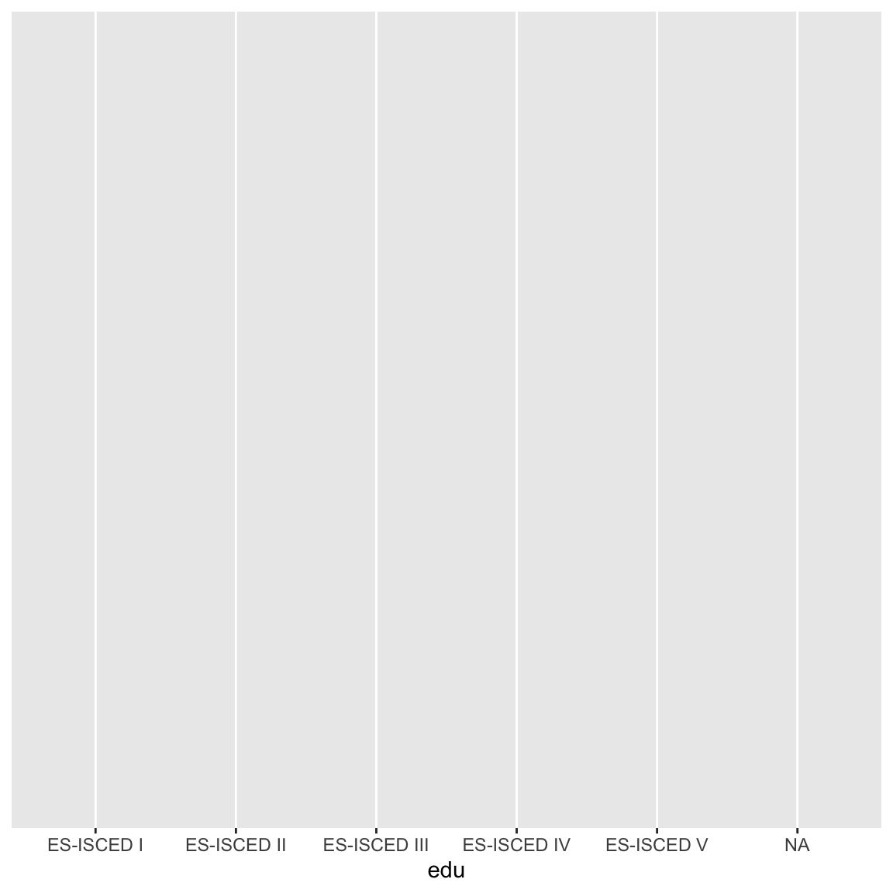
Aber warum sind beide Plots leer?
ggplot() verstehen
Wir haben nur das Grundgerüst mit der Funktion ggplot() übergeben. Diese Funktion beinhaltet immer die Daten (in data) und die Struktur des Plots (mapping). Ein Balkendiagramm ist eine univariate Darstellung und deshalb übergeben wir nur eine Variable (hier edu).
Um nun ein Balkendiagramm aus dem Plot zu machen, benötigen wir einen weiteren Layer, der eben ein Balkendiagramm ausgibt. Dies ist der Zusatz geom_bar().
ggplot(data = pss,
mapping = aes(x = edu)
) +
geom_bar()
# oder:
# mfPlot +
# geom_bar()
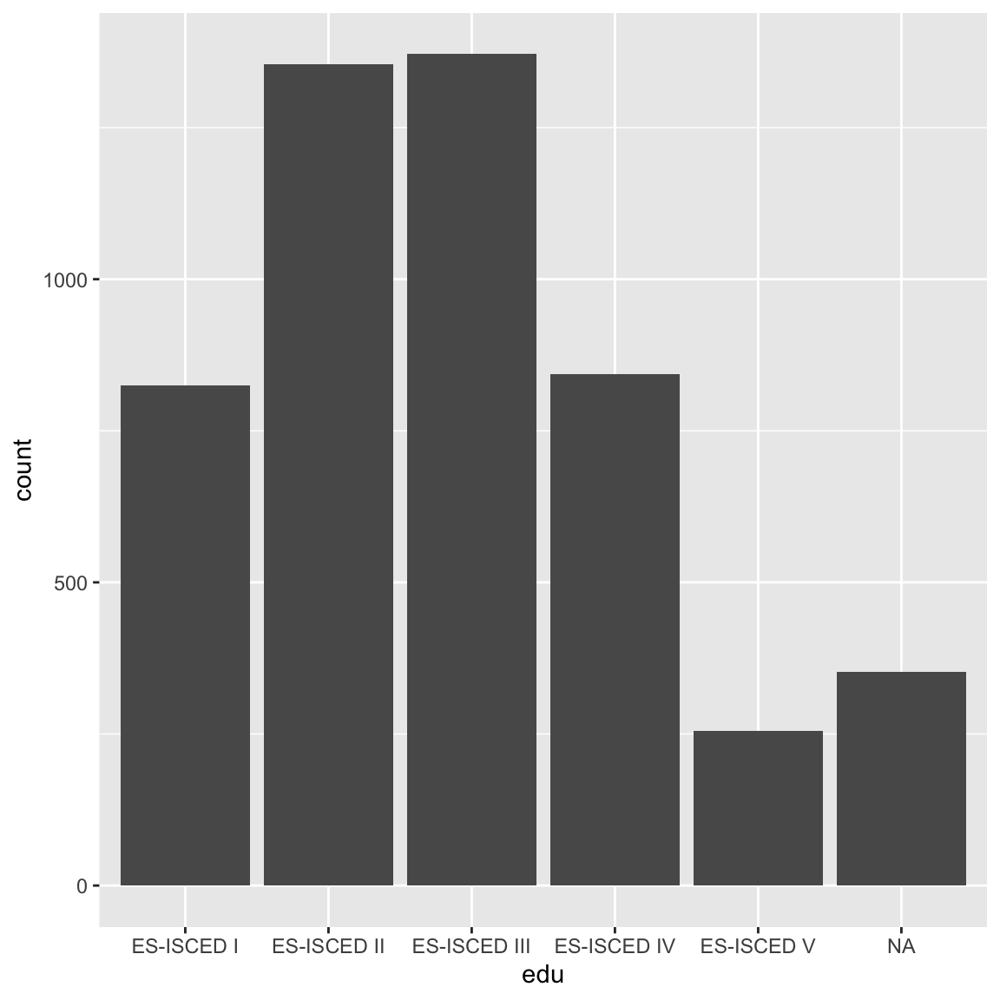
Jetzt haben wir ein Balkendiagramm mit Häufigkeiten. Manchmal möchte man lieber Prozente:
ggplot(data = pss,
mapping = aes(x = edu,
y = ..prop.., #Einstellung Prozente
group = 1 # Einstellung nur eine Gruppe, sonst wäre jeder Balken 100 %
)
) +
geom_bar()

Alternativ können wir das Diagramm auch zu einem tatsächlichen Balkendiagramm machen und die Säulen loswerden:
mfPlot +
geom_bar() +
coord_flip()
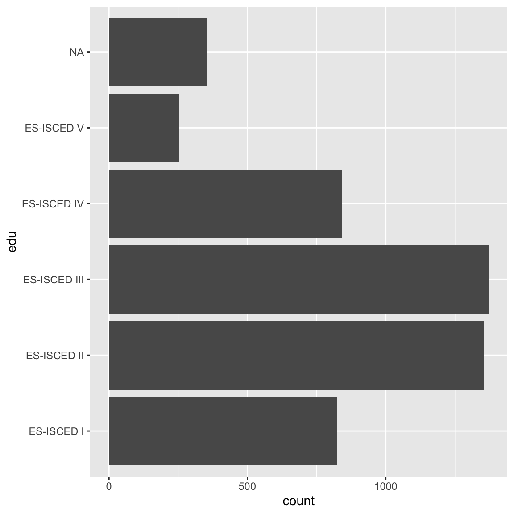
Bringen wir Farbe ins Spiel!
In der Regel wollen wir Grafiken ansprechend gestalten, dafür gibt es verschiedene Argumente in ggplot(). Die zwei wichtigsten sind color und fill. Probieren wir es einfach mal der Reihe nach aus. Wir wollen, dass die Balken jetzt jeweils eine andere Farbe haben.
eduPlot <- ggplot(pss,
aes(edu,
color = edu
)
) +
geom_bar()
eduPlot
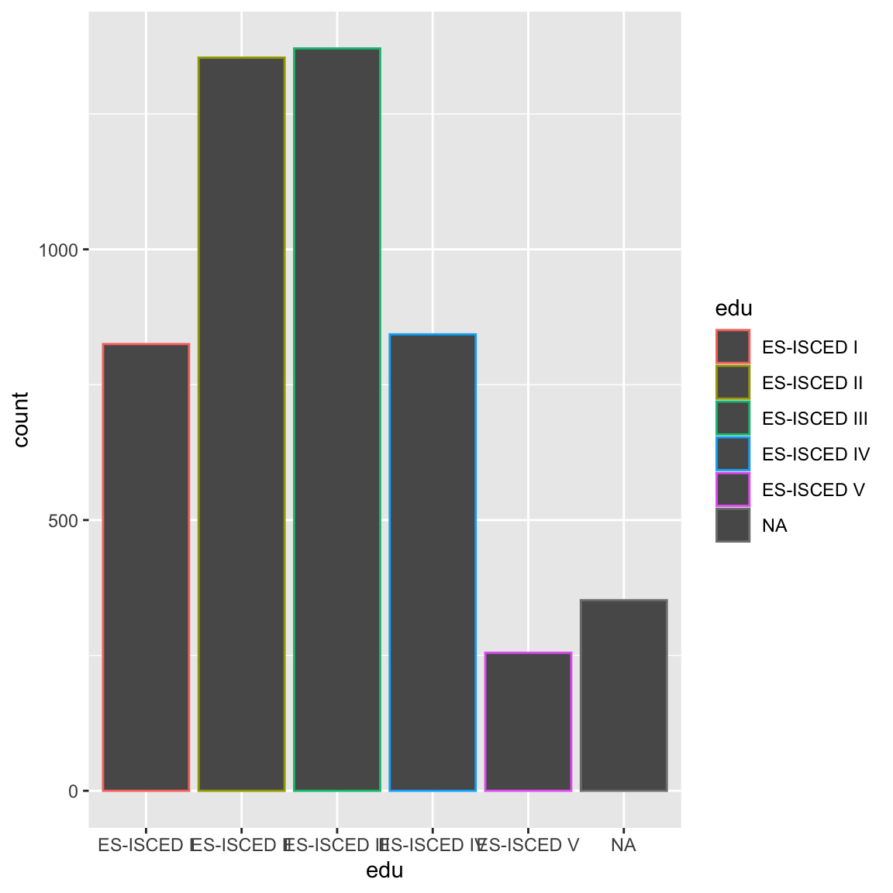
color macht also hier nur die Randlinie, nicht aber die Fläche der Balken farbig. Mit fill können wir das beheben.
eduPlot <- ggplot(pss,
aes(edu,
fill = edu
)
) +
geom_bar()
eduPlot
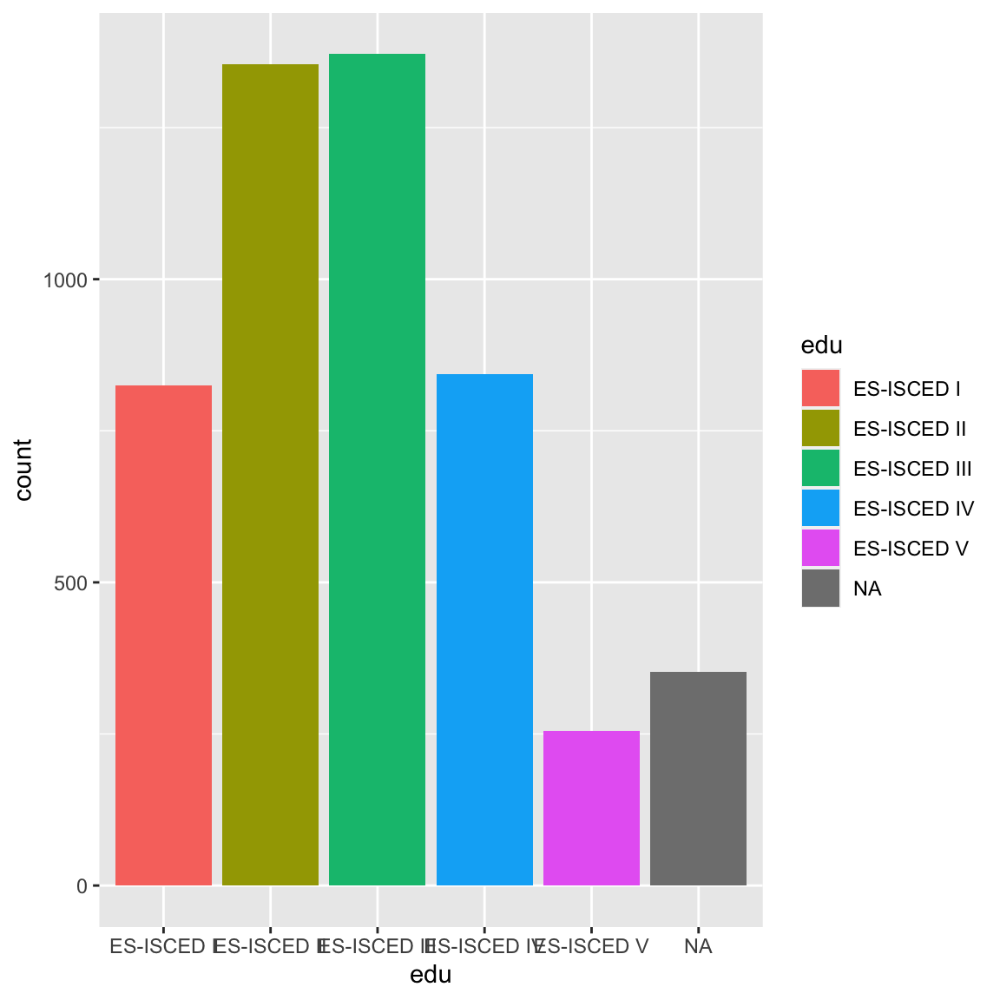
Wenn man eigene Farben benennen will, kann man dies in der Unterfunktion geom_bar(). Es empfiehlt sich vorab einen Farbvektor zu definieren:
cntryCol = c("steelblue",
"seagreen",
"red4",
"orange",
"pink",
"lightgray"
)
ggplot(pss,
aes(x = edu,
fill = edu
)
) +
geom_bar(fill = cntryCol)
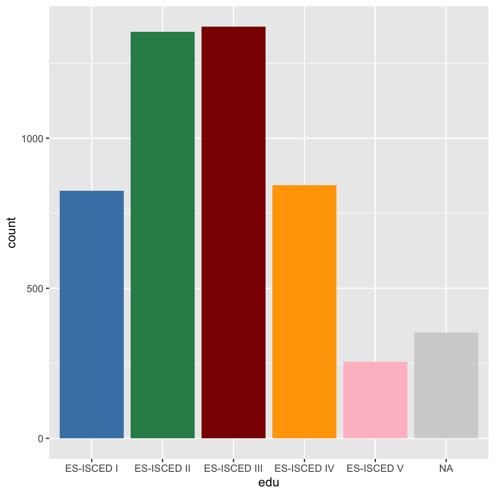
Neben dieser Möglichkeit können auch Farbpaletten genutzt werden, die eine beliebige Anzahl an Farben inkludieren. Wichtig: Sind in der Farbpalette weniger Farben definiert, gibt es einen Fehler. Es müssen mindestens so viele Farben vorhanden sein, wie die Variable Kategorien hat. Hierzu fügt man einen weiteren Layer scale_fill_manual() bzw. scale_fill_color() hinzu.
# a colourblind-friendly palettes
cbp1 <- c("#999999",
"#E69F00",
"#56B4E9",
"#009E73",
"#F0E442",
"#0072B2",
"#D55E00",
"#CC79A7"
)
eduPlotCb<- ggplot(pss,
aes(edu,
fill = edu
)
) +
geom_bar() +
scale_fill_manual(values = cbp1)
eduPlotCb
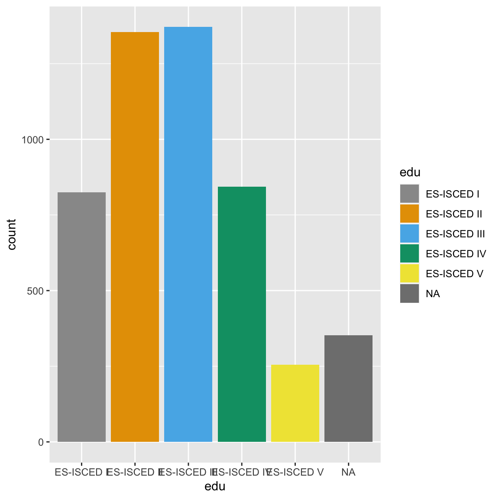
Für einen kostensparenden Druck kann man auch einfach direkt scale_fill_gray() nutzen:
ggplot(pss,
aes(district,
fill = district
)
) +
geom_bar() +
scale_fill_grey()
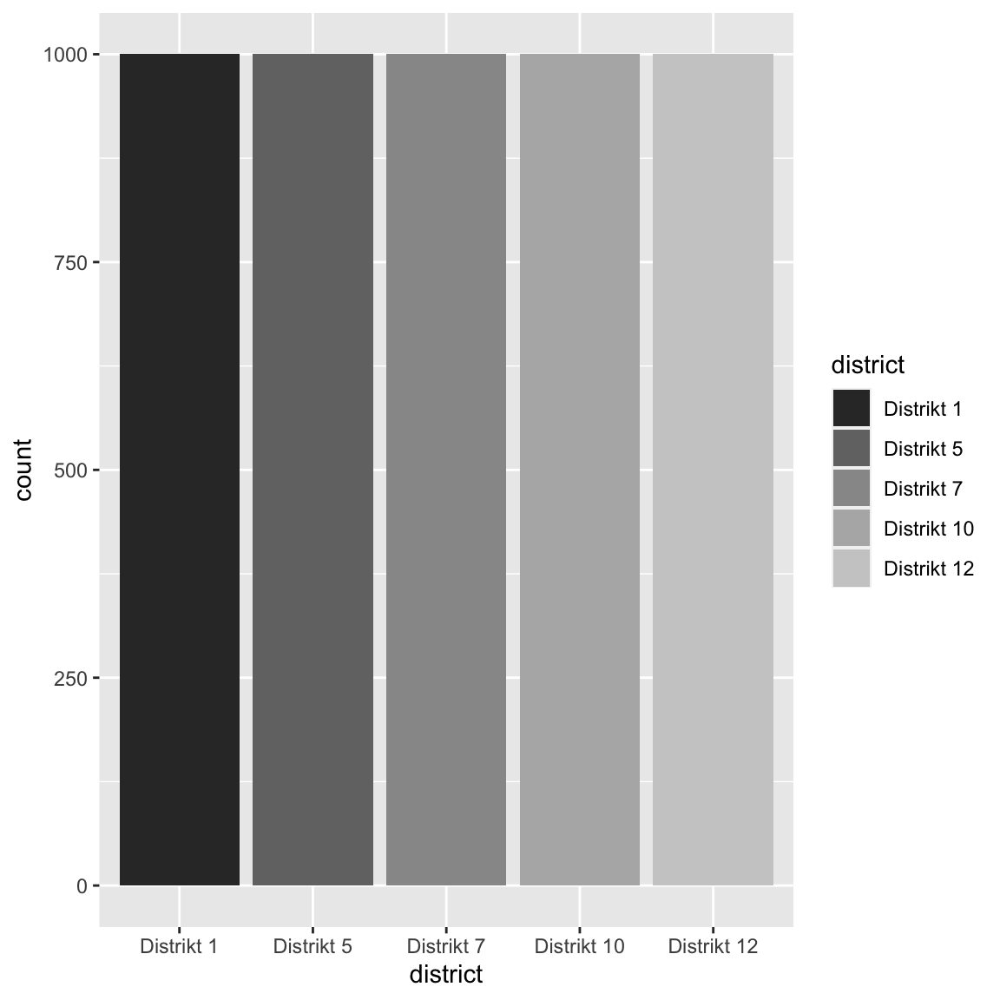 Alternativ kann man auch verschiedene vorgefertigte Farbpaletten nutzen. Dazu muss man oftmals das entsprechenden Paket laden und dann gibt es eine dazugehörige Funktion, die als zusätzlicher Layer festgelegt wird.
Ein solche Paket ist zum Beispiel RColorBrewer:
# if(!require("RColorBrewer")) install.packages("RColorBrewer")
library("RColorBrewer")
display.brewer.all()
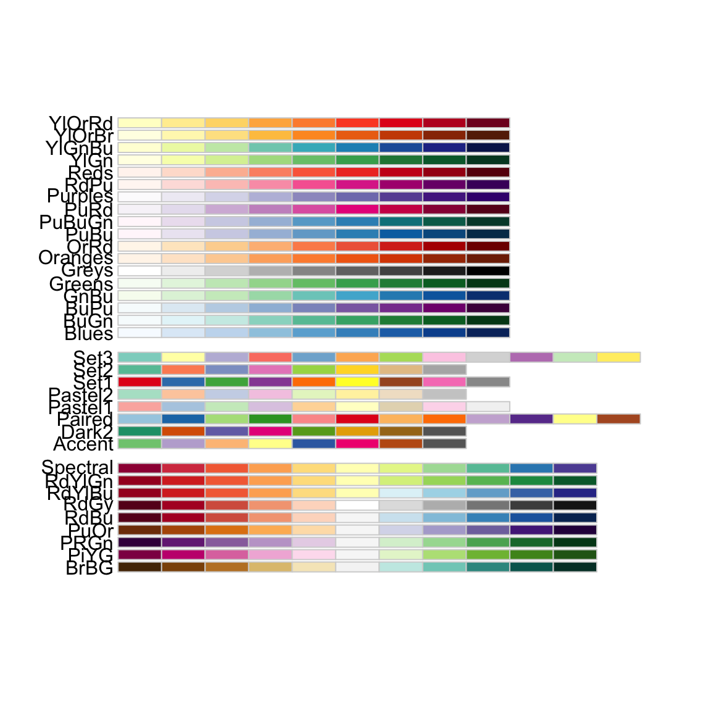
Die einzelnen Farbpaletten können, dann wie folgt hinzugefügt werden:
eduPlot +
scale_fill_brewer(palette = "Dark2")
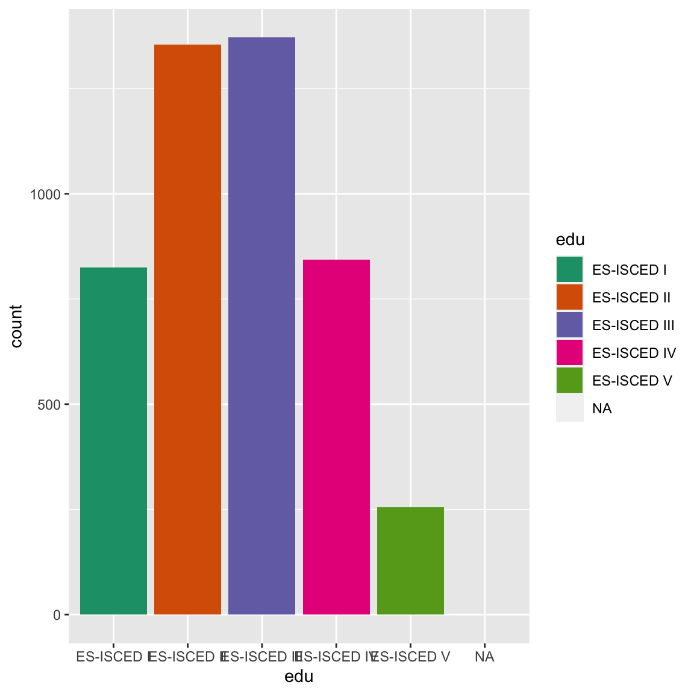
Achsen anpassen
Als nächsten Schritt passen wir die Achsen an, da die Standardeinstellungen dafür meistens nicht schön sind. Hierfür gibt es folgende Funktionen:
coord_cartesian() (Achsengrenzen festlegen)scale_x_continuous()/scale_y_continuous() (für numerische Vektoren)scale_x_discrete()/scale_y_discrete() (für Faktoren oder Character-Variablen)
Was ist mit unseren Achsen?
eduPlot2 <- eduPlot +
coord_cartesian(ylim = c(0,
1500
)
) +
scale_y_continuous(breaks = seq(0,
1500,
100
)
)
eduPlot2
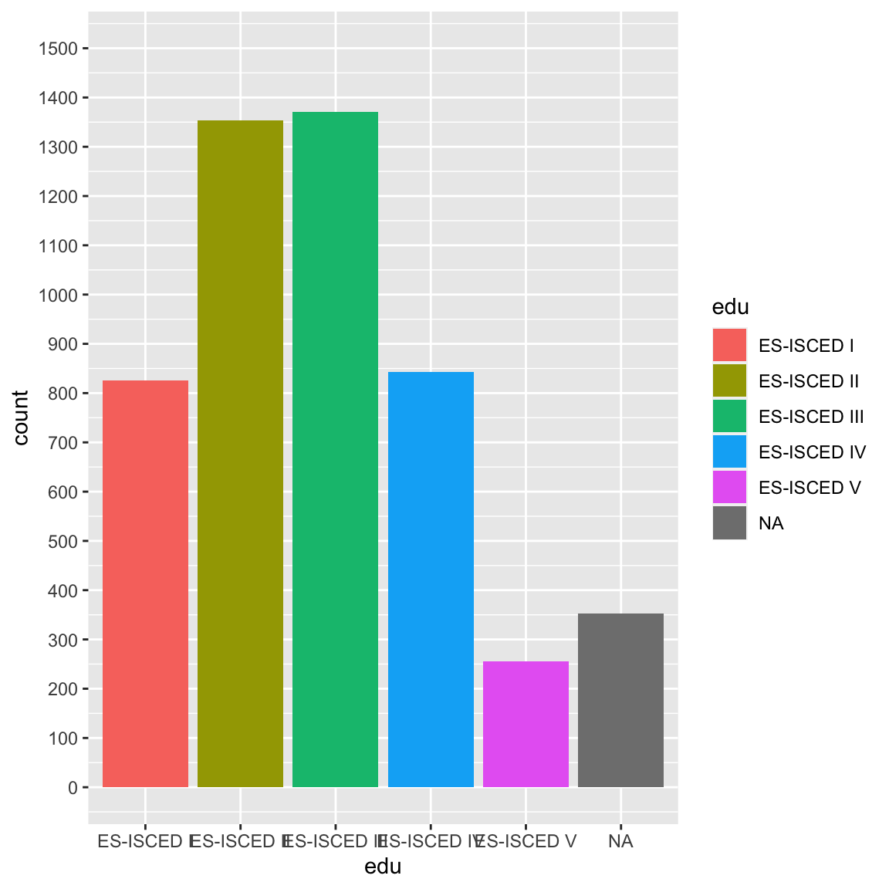
Die x-Achse ist kategoriell und daher macht eine metrische Aufteilung keinen Sinn. Mit scale_x_discrete() können wir aber die limits festsetzen:
eduPlot3 <- eduPlot2 +
scale_x_discrete(limits = c("ES-ISCED I",
"ES-ISCED II",
"ES-ISCED III",
"ES-ISCED IV",
"ES-ISCED V"
)
)
eduPlot3
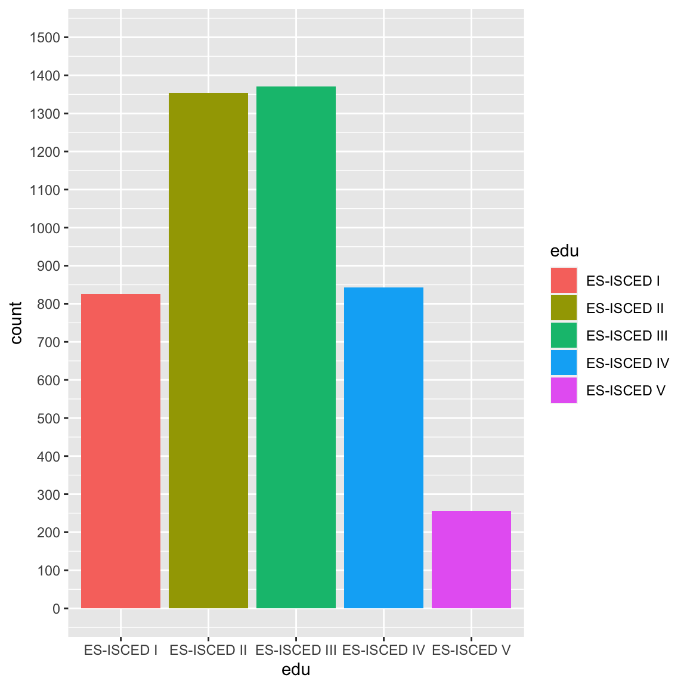
Was haben wir ausgelassen?
Titel, Caption, Legende und weitere Infos
Wir können eine Reihe an Achsenbeschriftungen hinzufügen. Dies geschieht am einfachsten über die Funktion labs(). Darin gibt es folgende Unterargumente:
xlab: x-Achsentitelylab: y-Achsentiteltitle: Titelcaption: Fußnote/Caption
eduPlot4 <- eduPlot3 +
labs(x = "Education level",
y = "Frequency",
title = "my first shot at ggplot2",
caption = "Data: Panem Social Survey."
)
eduPlot4
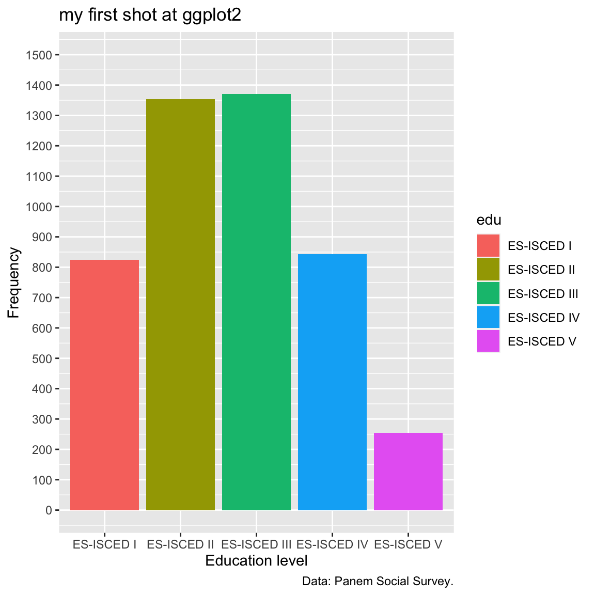
Das schaut schon soweit gut aus, jetzt wollen wir nur noch die Legende anpassen, so dass auch dort ein angepasster Titel steht. Dies machen wir in der Funktion scale_fill_manual(), die wir zuvor schon genutzt haben. Wir überschreiben sozusagen die Angaben:
eduPlot5 <- eduPlot4 +
scale_fill_manual(values = cbp1,
name = "Education category",
labels = c("sehr niedrig",
"niedrig",
"mittel",
"hoch",
"sehr hoch"
)
)
eduPlot5
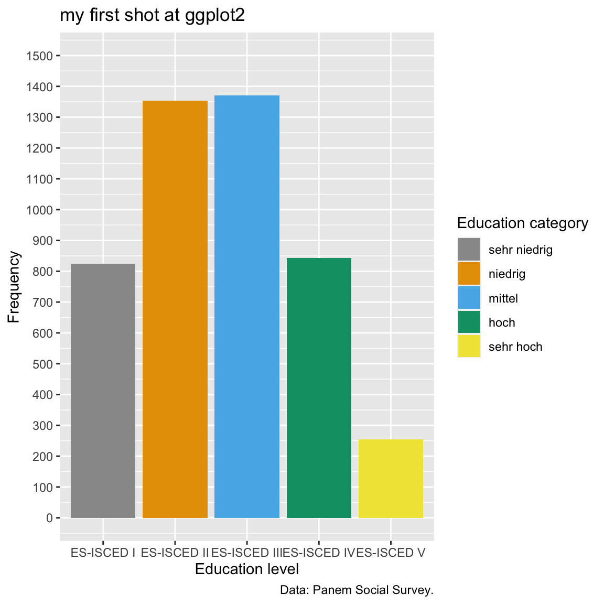
Über die Funktion theme() können viele Feineinstellungen vorgenommen werden. Diese können wir nicht im einzelnen hier besprechen, aber es kann wirklich jedes Detail eingestellt werden. Mehr dazu machen die Personen, die am Nachmittag nochmal vertieft mit ggplot() arbeiten.
Histogramme
Gehen wir nun über zu Histogrammen. Diese nutzen wir für metrische Variablen. Hierfür nutzen wir den Layer geom_histogram().
agePlot <- ggplot(pss,
aes(agea)
) +
geom_histogram()
agePlot

Auch hier können wir ganz einfach Anpassungen von oben übernehmen und den Plot schöner gestalten:
agePlot2 <- agePlot +
geom_histogram(color = "lightgray",
fill = "gray"
) +
labs(x = "Age in years",
y = "Frequency",
title = "Histogram of Age (PSS)"
)
agePlot2
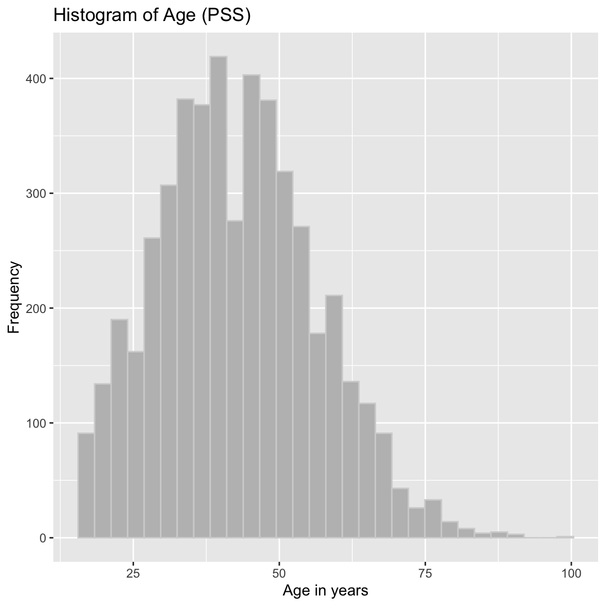
Oftmals fügen wir auch die Dichte hinzu, um einfacher beurteilen zu können, ob annähernd eine Normalverteilung vorliegt. Hierzu bestimmen wir, dass die y-Achse die Dichte anzeig (y = ..density..) und fügen geom_density() hinzu. Mit alpha stellen wir Durchsichtigkeit ein und mit fill die Farbe der Fläche.
ageDensPlot <- ggplot(pss,
aes(agea)
) +
geom_histogram(aes(y = ..density..),
color = "lightgray",
fill = "gray"
) +
geom_density(alpha = 0.2,
fill = "lightblue"
) +
labs(x = "Age in years",
y = "Density",
title = "Histogram of Age (PSS)"
)
ageDensPlot
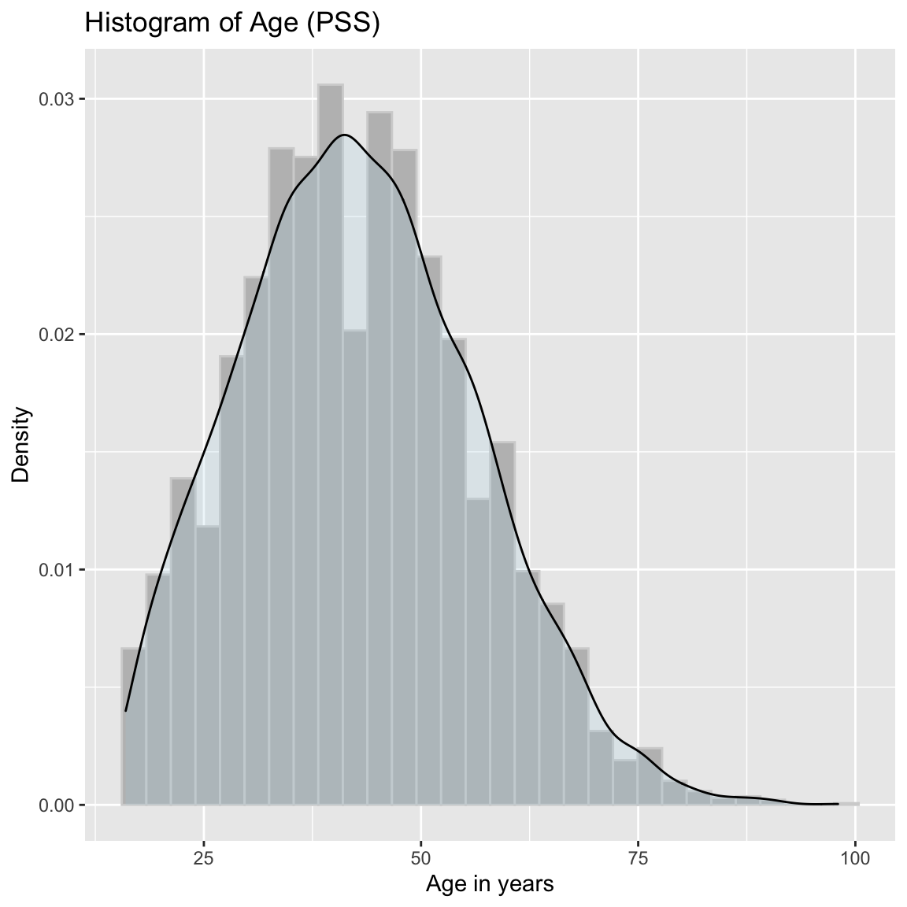
geom_histogram() wählt automatisch die Breite der bin (Säulen), was irreführend sein kann. Hier könnten wir zum Beispiel so einstellen, dass wir so viele bins erhalten, wie es auch tatsächliche Alterskategorien gibt. Man kann einfach die Breite der bins mit binwidth() festlegen. Hier wählen wir den realen Abstand zwischen zwei Einträgen in dem Vektor/Variable (hier 1).
ggplot(pss,
aes(agea)
) +
geom_histogram(aes(y = ..density..),
color = "lightgray",
fill = "gray",
binwidth = 1
) +
geom_density(alpha = 0.2,
fill = "lightblue"
) +
labs(x = "Age in years",
y = "Density",
title = "Histogram of Age (PSS)"
)
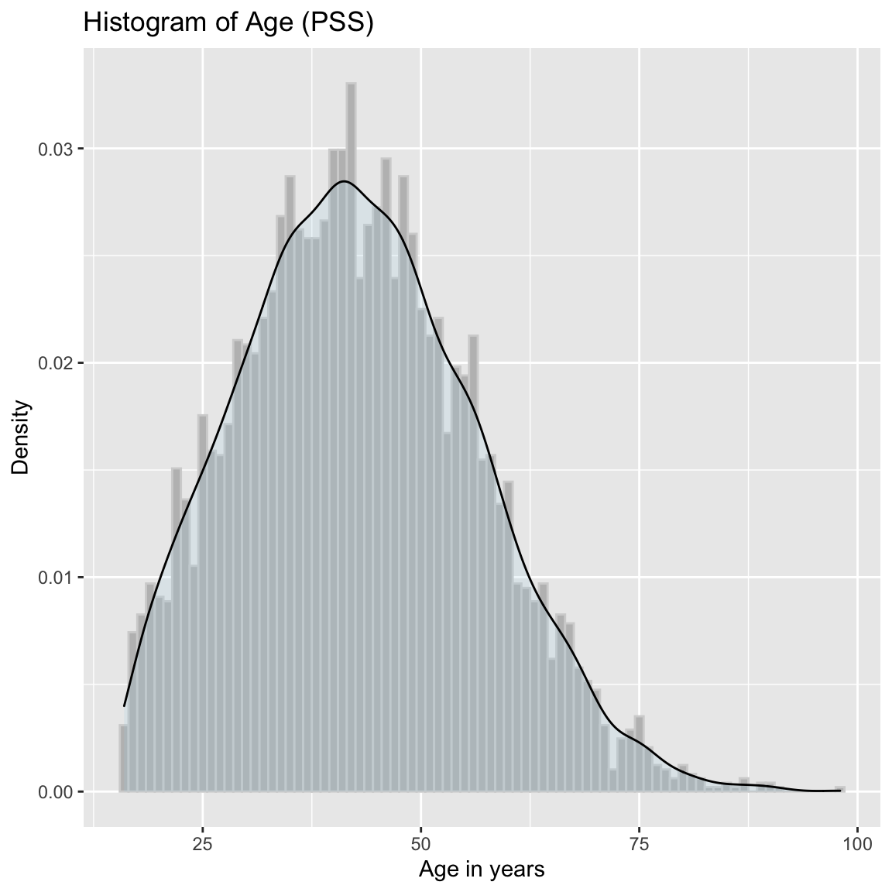
Scatterplots
Oftmals wollen wir zwei Variablen darstellen und ihren Zusammenhang. So könnten wir uns zum Beispiel für den Zusammenhang zwischen der Zufriedenheit mit dem demkoratischen System (stfdem) und der Zufriedenheit mit der ökonomischen Entwicklung (stfeco) anschauen. Dies sind beides Variablen auf pseudometrischen Niveau gemessen, in R aber als numerische Variablen hinterlegt.
Um Scatterplots darzustellen nutzen wir geom_point(). Wir geben jetzt zwei Variablen in aes() an. Einmal die x-Achsenvariable und dann die y-Achsenvariable.
scatter1 <- ggplot(pss,
aes(stfeco,
stfdem
)
) +
geom_point()
scatter1
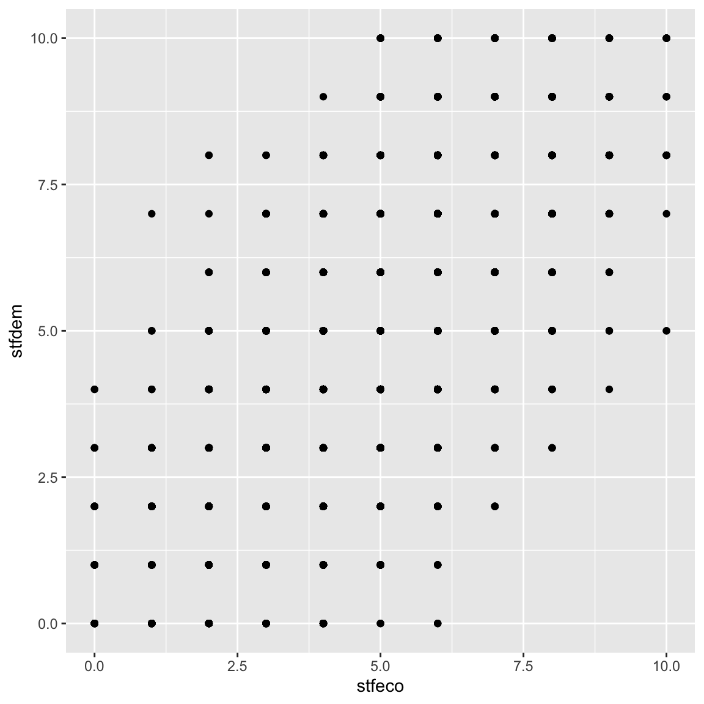
Warum sehen wir nun so wenige Punkte, obwohl der Datensatz \(5000\) Fälle hat?
Scatterplot pseudometrische Variablen
Um pseudo-metrische Variablen korrekt darzustellen, benötigen wir geom_jitter(), da die Datenpunkte sonst übereinanderlappen. Wichtig: Das jittern sollte angegeben werden, damit kein falscher Dateneindruck entsteht!
scatter2 <- ggplot(pss,
aes(stfeco,
stfdem
)
) +
geom_jitter(width = 0.3,
height = 0.3
) +
labs(x = "Satisfaction with Economy",
y = "Satisfaction with Democracy",
caption = "Data jittered."
)
scatter2
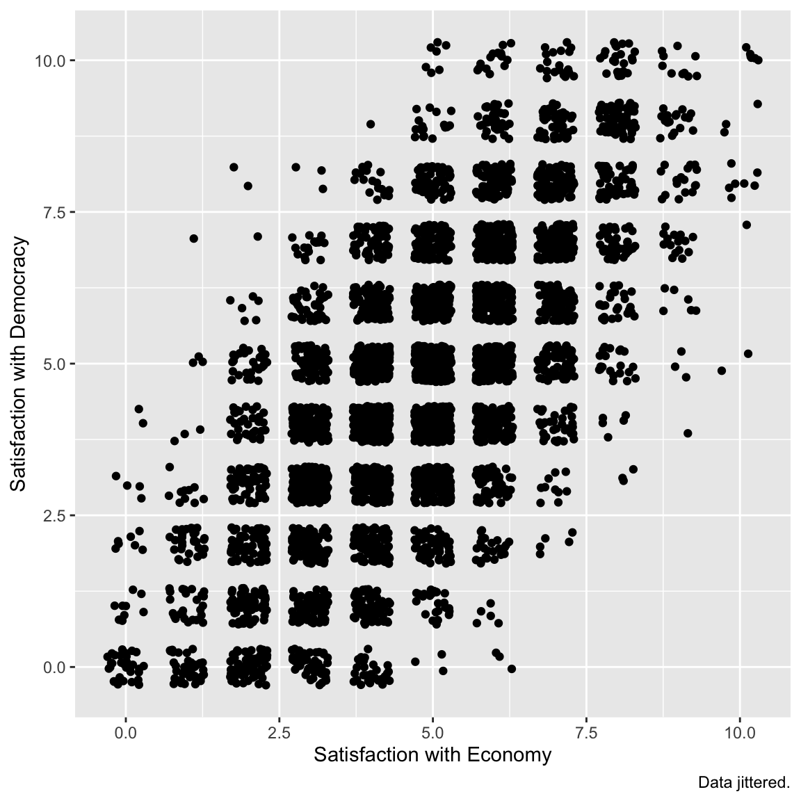
Weitergehend können wir mit alpha in geom_jitter() (oder auch in geom_point()) einen besseren Eindruck verstärken. Datenkombinationen die weniger oft vorkommen erscheinen nciht so kräftig:
ggplot(pss,
aes(stfeco,
stfdem
)
) +
geom_jitter(alpha = .2,
col = "blue"
)
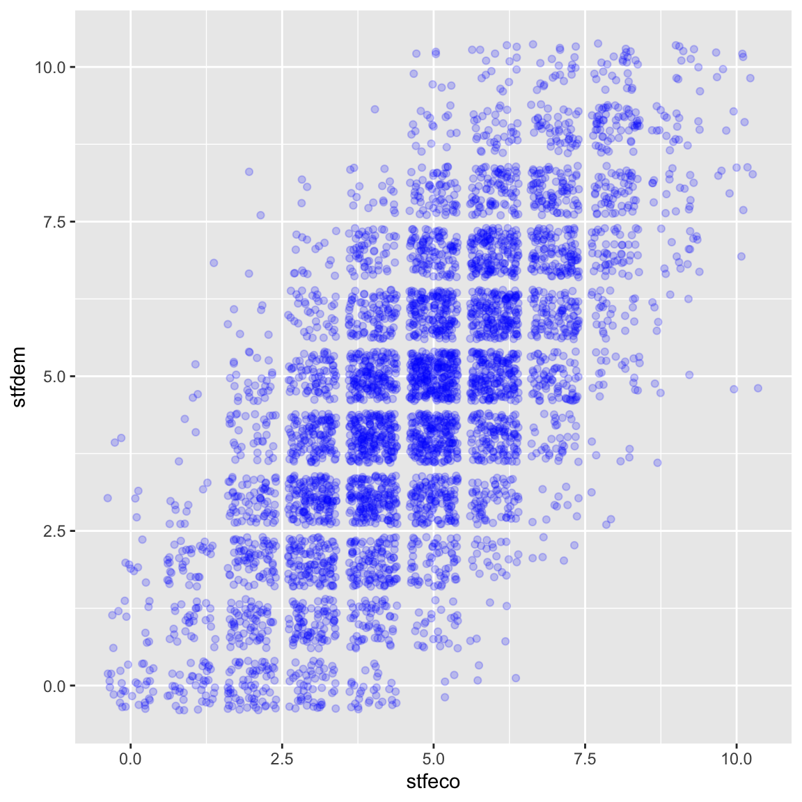
Als weitere Argumente können sowohl in geom_jitter() als auch in geom_point() mit shape das Erscheinungsbild geändert werden. Das Cheat Sheet findet man hier.
Gruppierungen
Oftmals möchte man eine Variable oder den Zusammenhang zweier Variablen getrennt nach einer kategoriellen Variable einblicken. Dazu gibt es in ggplot2 verschiedene Möglichkeiten. Ein paar davon werde ich kurz vorstellen:
Balkendiagramme
Wir möchten gerne wissen, wie viele Befragte in den fünf ausgewählten Distrikten weiblich bzw. männlich sind. Dies können wir einfach erhalten, in dem wir in ggplot() mit fill eine Aufteilung nach Geschlecht hinzufügen. Das funktioniert auch analog mit color (nur ist es etwas unübersichtlich bei Balkendiagrammen).
barg <- ggplot(pss,
aes(district,
fill = gndr
)
) +
geom_bar()
barg
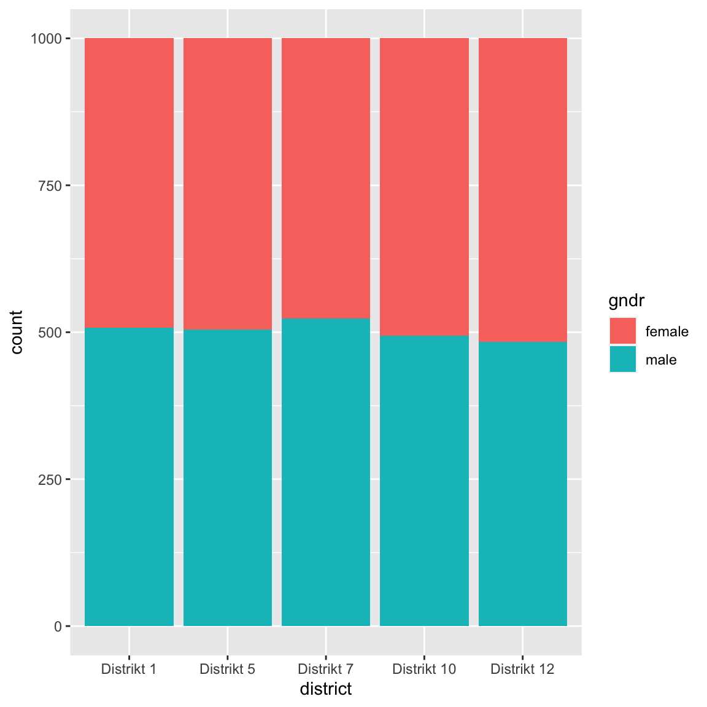
Will man dies nun etwas übersichtlicher nebeneinander haben, geschieht dies einfach mit dem Argument position in geom_bar():
barg2 <- ggplot(pss,
aes(district,
fill = gndr
)
) +
geom_bar(position = position_dodge())
barg2
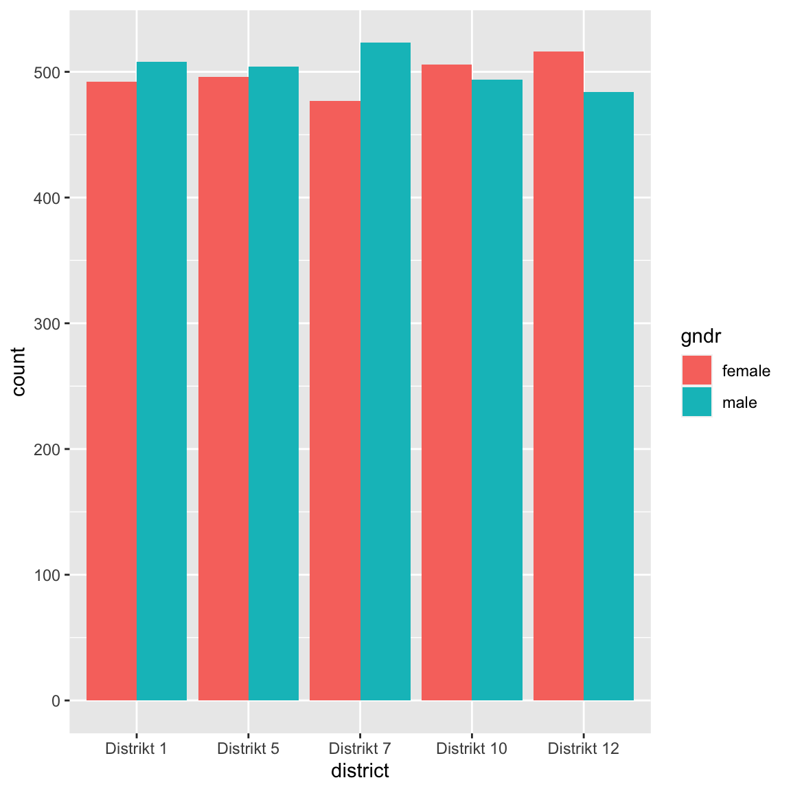
Alternativ kann man facets innerhalb eines ggplots erstellen. Dies geht entweder mit facet_wrap() oder mit facet_grid:
barg2 <- ggplot(pss,
aes(district,
fill = gndr
)
) +
geom_bar() +
facet_wrap(vars(gndr))
barg2
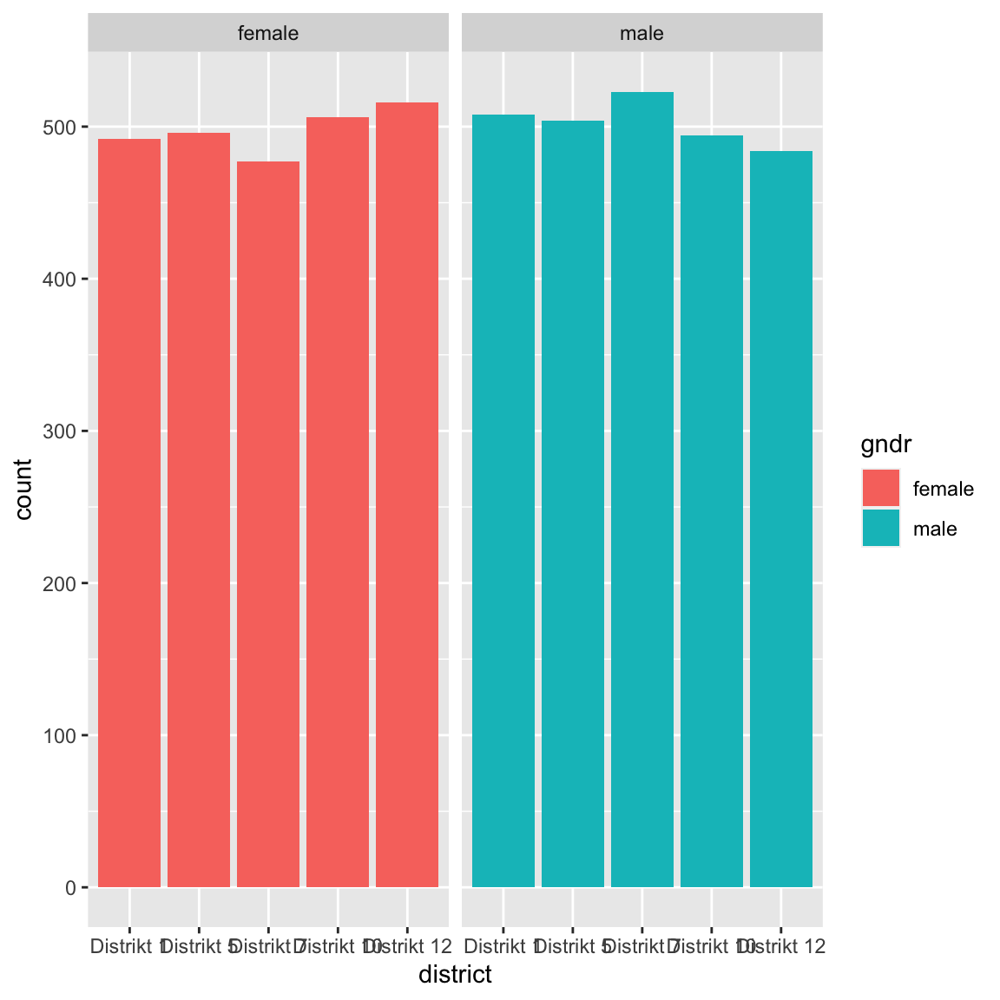
Scatterplots
Bei Scatteprlots kann man ebenfalls mit shape arbeiten oder auch direkt facet_wrap/facet_grid benutzen.
Wir möchten nun das Scatterplot von vorher nach Distrikten ausgeben lassen. Dazu können wir zuerst den Distrikten verschiedene Formen zuordnen. Dazu geben wir innerhalb von aes() einfach an, dass die Form (shape) in Abhängigkeit der Variable district ausgegeben werden soll.
ggplot(pss,
aes(stfeco,
stfdem,
shape = district
)
) +
geom_jitter(alpha = .2,
col = "blue"
)
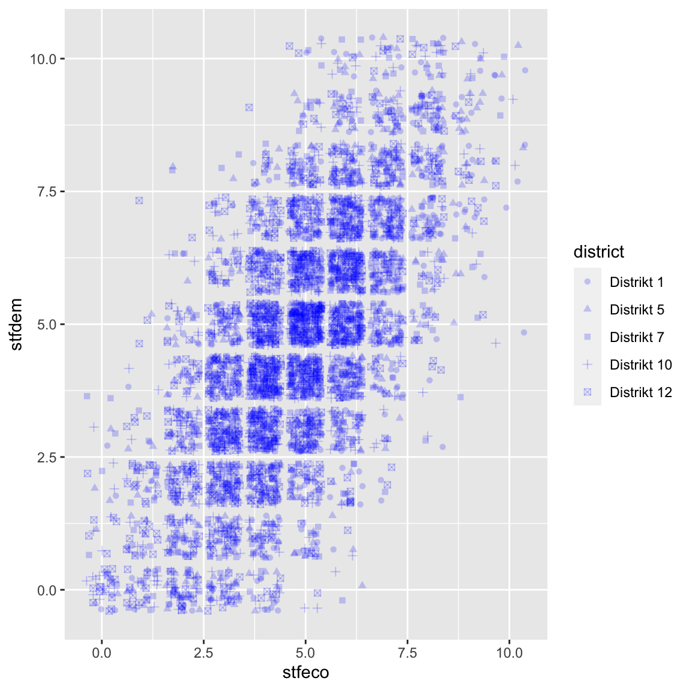
Das ist jetzt noch nicht ganz so übersichtlich. Jetzt könnte man noch zusätzlich die Farbe in Abhängigkeit des Distrikts ändern. Dazu nutzt man das color-Argument in aes() und entfernt es aus geom_jitter(). Lässt man das color-Argument in geom_jitter() bestehen, wird dies als zuletzt definierte Einstellung verwendet und alles bleibt blau.
ggplot(pss,
aes(stfeco,
stfdem,
shape = district,
color = district
)
) +
geom_jitter(alpha = .2)
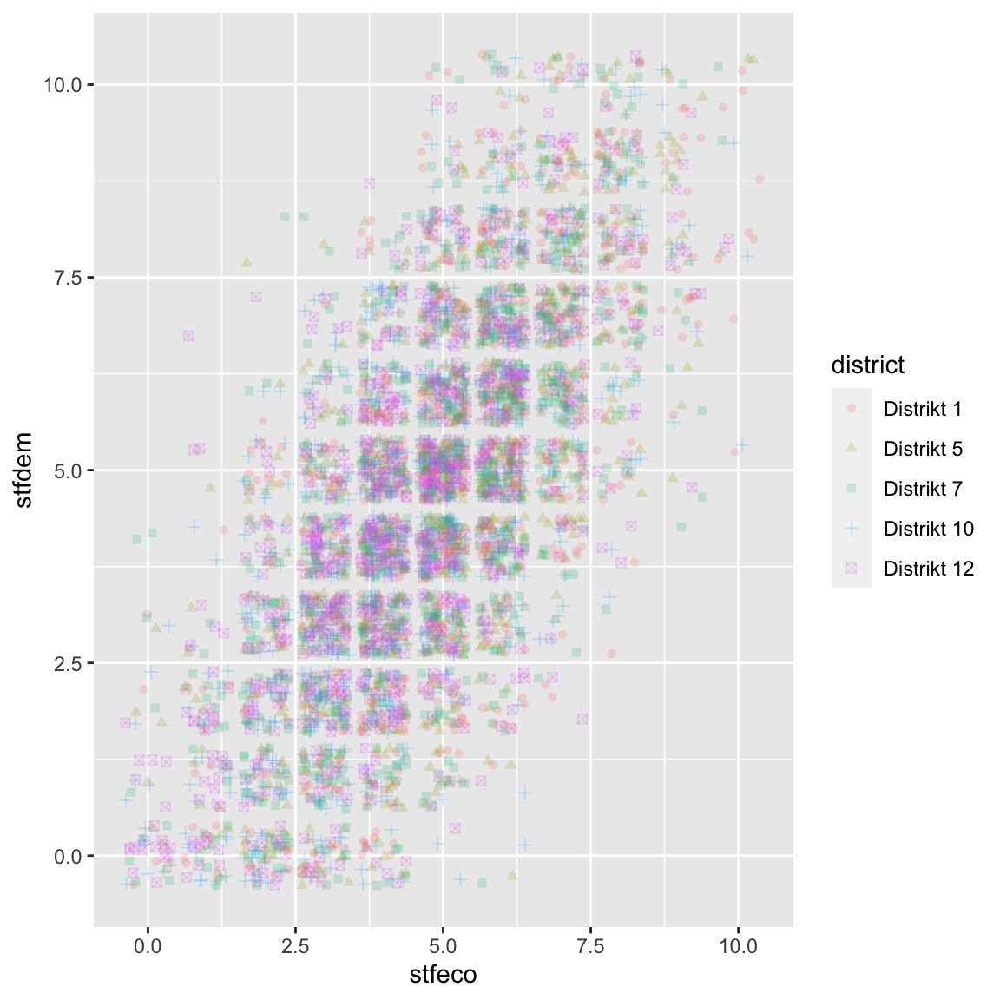
Die Abbildung ist zwar jetzt schön bunt, aber so richtig einen guten Überblick gibt auch diese Darstellung noch nicht. Um das zu erreichen, nutzt man facets. Der Unterschied zwischen den zwei möglichen facets ist folgender: Bei facet_wrap() wird aus einer eigentlich eindimensionalen Darstellung eine zweidimensionalen Darstellung gemacht und dementsprechend mehrere Abbildungen erstellt. Wenn man zum Beispiel eine kategoriale Variable hat, nach der man die Darstellung splitten möchte, ist facet_wrap() die richtige Wahl. Mit den Argumenten nrow und ncol kann man dazu die Anzahl der Zeilen und Spalten festlegen. facet_grid() dagegen ist zweidimensional. Hier wird ein Grafikpanel anhand von zwei Variablen erstellt, dass alle Kombinationen (auch die ohne Fälle) anzeigt. Dazu wird die Reihenfolge der Variablen auch wie in einer Formel angegeben, erst pro Zeile und dann pro Spalte.
ggplot(pss,
aes(stfeco,
stfdem,
shape = district,
color = district
)
) +
geom_jitter(alpha = .2) +
facet_wrap(vars(district))

Wie oben beschrieben wird in facet_grid() ein tatsächlicher zweidimensionaler Plot erstellt. Dazu geben wir in der Funktion selbst an, über welche (kategorialen) Variablen der Plot geteilt werden soll. Die erste Variable ist die Trennung über Zeilen und die zweite Variable die Trennung über Spalten. Im Beispiel trennen wir in Zeilen nach Distrikt und in Spalten nach Geschlecht:
ggplot(pss,
aes(stfeco,
stfdem,
shape = district,
color = district
)
) +
geom_jitter(alpha = .2) +
facet_grid(district ~ gndr)
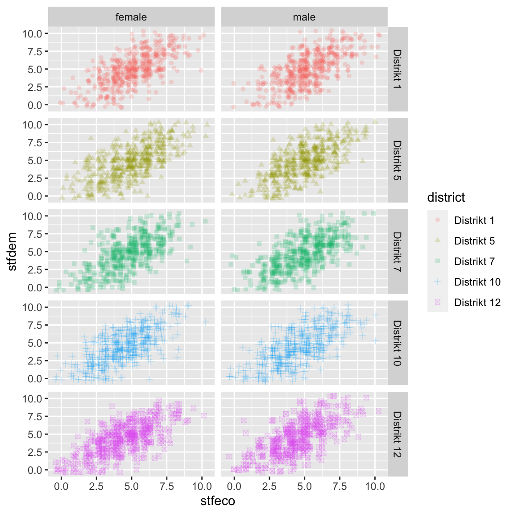
Was es noch zu entdecken gibt in ggplot2?
Schriftarten bearbeiten bzw. Darstellung des Plots
missing values darstellen
Marginal Plots
bivariate Normalverteilungen
Karten bearbeiten
Zusammenfügen von Plots
Lab
Die Übungsaufgaben findet ihr als task ggplot in RStudio Cloud.